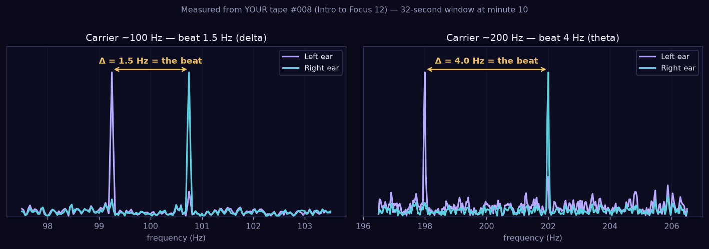
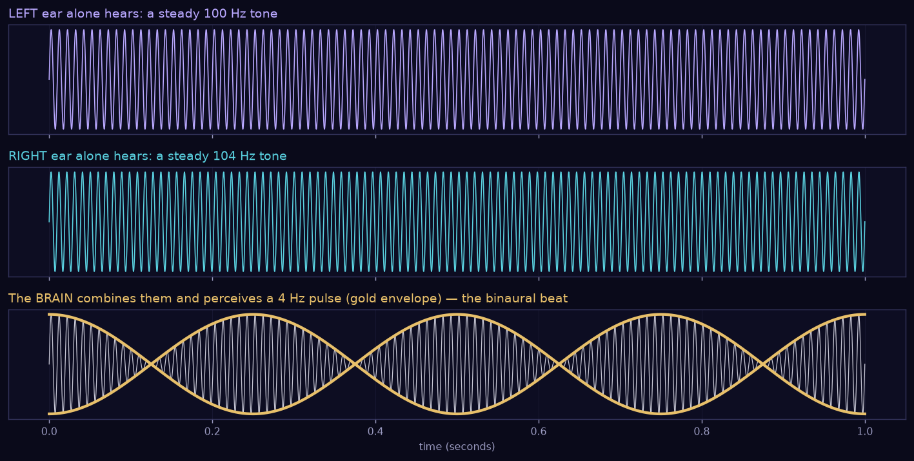
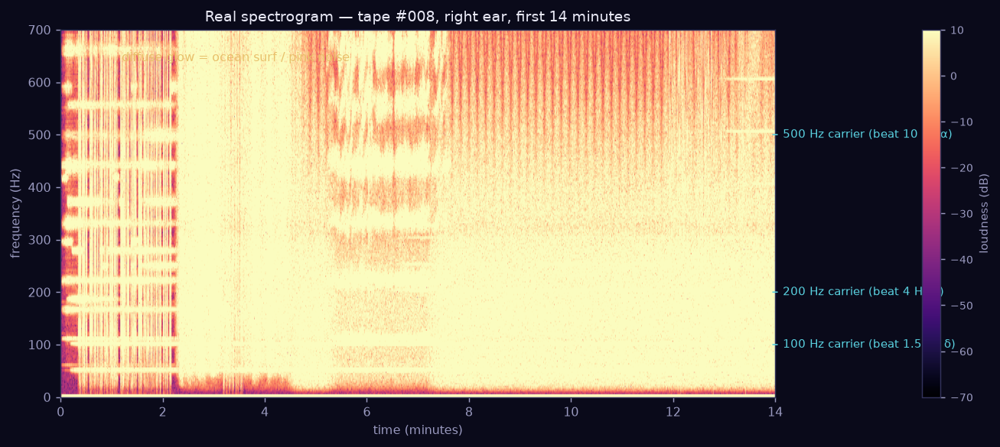
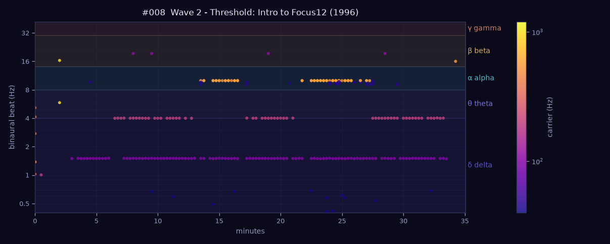

How the Gateway tapes steer your brain with sound — explained with real measurements from your own recordings.
← back to the Tape LibraryHemi-Sync (hemispheric synchronization) is built on the binaural beat — an auditory illusion discovered in 1839 and turned into a training tool by Robert Monroe.
The 4 Hz doesn't exist in the room. Each ear hears only its own steady tone — which is why stereo headphones are mandatory. Your brainstem compares both ears and generates the difference internally. Because 4 Hz is also the speed of theta brainwaves, your brain tends to drift toward that rhythm — this "frequency-following response" is the entire mechanism behind every Gateway tape.
Every Hemi-Sync tone pair is described by two frequencies with very different jobs.
🚚 The CARRIER is the tone you actually hear — the pitch, like a musical note (100 Hz ≈ a low hum, 400 Hz ≈ near middle A). It's the delivery truck. Its exact value matters little; it just has to be comfortable and audible.
📦 The BEAT is the small difference between the left-ear and right-ear carriers. It's the cargo — the actual brainwave frequency being delivered (0.5–30 Hz, far too low to hear as a tone directly, which is exactly why the carrier trick is needed).

Monroe stacks several carriers at once (100, 200, 300, 500 Hz…), each carrying its own beat. That's how one tape can hold your body in delta sleep (1.5 Hz) while nudging your mind into alert theta (4 Hz) — the famous "mind awake, body asleep" of Focus 10.

Your brain always oscillates at some dominant rhythm. The bands are just names for speed ranges — slower = deeper. The Gateway tapes pick beats to pull you toward a target band.
A typical Gateway session is a guided descent and return: β → α → θ (→ δ) on the way in, then back up → α → β at the wake-up count. On the frequency charts you can literally watch this staircase.
A spectrogram is a photograph of sound: time runs left→right, pitch runs bottom→top, and brightness = loudness. Steady tones become horizontal lines.

How to read any spectrogram:
➡️ Horizontal line = a steady tone (a carrier). Two lines a hair apart
(one per ear) = a binaural pair.
⬆️ Height of the line = its pitch (the carrier Hz).
🔥 Brightness = loudness.
🌫️ Fuzzy wash = noise (surf, pink noise — used to relax and to mask the tones).
⏸️ A line appearing/disappearing = the engineers switching layers on/off as the
exercise moves between Focus levels.
Every FLAC tape in your library was measured (16-second FFT windows, every 15–30 s, left/right peaks paired). The 〜 button in the player shows the result.

How to read it:
🕐 X-axis — minutes into the tape.
〰️ Y-axis — the beat frequency (log scale), i.e. the brainwave rhythm
being delivered at that moment.
🎨 Colored horizontal zones — the bands from section 3 (δ θ α β γ), so a dot's
zone tells you which mental state that layer targets.
🔵 Dot color (colorbar) — which carrier is delivering it: dark purple ≈ 50–100 Hz,
pink ≈ 300 Hz, yellow ≈ 600–1000 Hz. Several dot-rows at once = stacked layers.
🏷️ The chips below the chart — the same data as text:
301 Hz → 3.85 Hz · δ delta · min 6–30 reads as "a 301 Hz carrier delivered a 3.85 Hz delta
beat from minute 6 to 30".
Example reading, tape #008: a 1.5 Hz delta anchor runs start-to-finish (body asleep), a 4 Hz theta layer joins at minute 6 (mind into meditation), and a 10 Hz alpha layer pulses in twice mid-session (receptive awareness for the Focus 12 work) — the Threshold recipe, visible at a glance.
⚠️ Stereo headphones required — the illusion cannot happen through speakers. Keep the volume low and comfortable.
Try this: start at θ 4 Hz and listen for the slow wobble — that pulse is not in the audio, it's your auditory system creating it. Then jump to β 20 Hz and feel the wobble become a flutter.